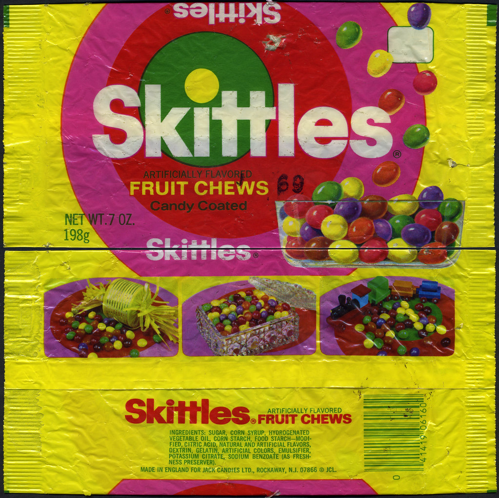
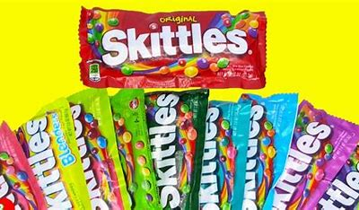

Skittles
Fruity Goodness for over 45 years!
Created back in 1971 by Jack Candies, a British distributor for Mars, Incorporated, the candy would eventually proper trademark form the U.S. Patent Office for it's name in 1974. Once 1979 rolled around, Skittles became to be wildly distributed for all to enjoy, with them being properly produced in the U.S. in 1982.
A Candy for Everyone!
While Skittles originally used an animal-derived gelatin in its creation, they have since discontinued the usage of this gelatin, making this delicious candy suitable for even vegetarians, vegans, and anyone who'd understandably be unconfrotable with consuming that. Anything so others can enjoy this awesome candy!
Multiple Fun Flavours!
Skittles comes in a variety of flavours, with 5 being regularly accessible, those being Origial, Tropical, Wild Berries, Sour, and Smoothies. However, there are even more unique ones that have popped up throughout it's existance, such as Xtreme, Ice cream, and Carnival Skittles. Be sure to be on the lookout for any special ones when you're grabbing some snacks!
